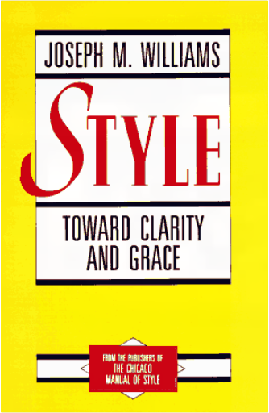

Style: Toward Clarity and GraceJoseph M. Williams  This acclaimed book is a master teacher's tested program for turning clumsy prose into clear, powerful, and effective writing. A logical, expert, easy-to-use plan for achieving excellence in expression, Style offers neither simplistic rules nor endless lists of dos and don'ts. Rather, Joseph Williams explains how to be concise, how to be focused, how to be organized. Filled with realistic examples of good, bad, and better writing, and step-by-step strategies for crafting a sentence or organizing a paragraph, Style does much more than teach mechanics: it helps anyone who must write clearly and persuasively transform even the roughest of drafts into a polished work of clarity, coherence, impact, and personality. |
 Made with Delicious Library
Made with Delicious Library